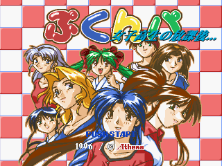

Game Feature: Joshikousei no Houkago... Pukunpa
女子高生の放課後...ぷくんパ (Joshikousei no Houkago: Pukunpa)
Platforms: Sony PlayStation, Sega Saturn
Release Date:
Webmaster's Note: This article may be moved from this blog to some kind of "Game Reviews" section of my personal site instead of residing in this blog in the future! I'll try to make sure URLs are preserved and redirect properly, but if this page suddenly disappears or becomes styled completely differently... well, that's why!
Japanese Game Studio Athena was an average, simple, and not very notable developer. They developed a few big titles, like the cult hit Dezaemon series, which let you create your very own shoot-em-up games right on your console. They also helped publish ports, such as the Game Boy and PlayStation ports of Money Idol Exchanger. They made enough shovelware bowling and Mahjong games to sustain themselves until their bankruptcy in 2013. Ultimately, though, unless you're a big Dezaemon fan, you probably don't know them or even care at all.
Pukunpa is one of Athena's even lesser known games. It's a simple game that was probably made for just a quick buck. But... I think it's actually a pretty interesting gem. Well... maybe not a gem per se, but definitely a cute and fun little game. Also, within this forgotten game made by a forgotten studio are clues of a rather interesting development history. Could this game have been even more insignificant if it weren't for some later design decisions? And more importantly... what's a "Pukunpa"?
The game's full title is 『女子高生の放課後...ぷくんパ』, which I would translate as "Pukunpa: High School Girls' After School". While that and the title screen seem to suggest it's some kind of visual novel or dating sim, this is actually a puzzle game! Seriously! It's pretty much a ripoff of Puyo Puyo with cute anime girls (...although, now that I think about it, I guess Puyo Puyo also has cute anime girls).
Each girl has her own animations, voice clips, and stage background. There are no differences in gameplay between them. They all represent some kind of after school sports activity, such as Tennis, Basketball, Judo, Swimming, and even Kendo. The voice clips and animations are all quite nice, but there are some rather... noticable animation frames...
Anyway, on to actual gameplay. As I said before, this game is very similar to Puyo Puyo, and while there are differences that prevent it from being a straight up clone, core gameplay is pretty much the same. Pairs of colored blobs come down from the top of the screen and you can move and rotate them as they fall down. I assume these blobs are called "Pukunpa", since that is the game title, but they're never actually referred to by any name in the game. When three or more of the same color blob are all touching, they clear up and you get points, which is way different from Puyo Puyo. That game requires four or more colored blobs to touch before they clear!
However, the real game mechanic that sets this game apart from that other game I keep mentioning is the bubbles. Sometimes, instead of getting a blob, you'll get a bubble with two little blobs in it. If you clear any blob touching a bubble, the bubble will pop and the two blobs inside of it expand onto the game field. This is how you set up chains, with higher chains sending more garbage over to the other player's side (JUST LIKE THAT OTHER GAME!). And that is Pukunpa as she is played.
The challenge of the game comes in setting up complex chains and knowing when to activate them before your plans get hijacked by some garbage blocks. Now just like in Dr. Robotnik's Mean Bean Machine, blind luck can often result in spectacular combos that can get you out of some sticky situations. There's nothing quite like the feeling of accidentally building your pile way too high and having it all cleared by one accidental mega-combo.
I love this game. It's incredibly charming and there are small little touches to give it more personality. The little effects for clearing out the game field are satisfying. Your character gets panicked when your game field is too full and she gets a smug grin on her face when the opponent is similarly in trouble. One cute little touch is that the blobs themselves actually get dizzy if you spin them too much before they land!
The music on the other hand... is pretty forgettable. Some of it's decent, but the gameplay tracks don't loop properly, causing them to fade out for a few seconds before looping. If they simply switched songs after each fade out, I think it could have worked better, but the music sits enough into the background for this to be not too big of a problem. I feel like a lot of the sound design doesn't actually fit the "cute anime girls" aesthetic, being a bit too goofy or childish at times. The children yelling out your combos is probably the most out-of-place bit of sound design. Most of the music ultimately fits, since it is just a puzzle game after all. You don't need that much substance to make a good puzzle game soundtrack.
I love all the personality this game has. The entire character roster is great. And hey... maybe there's even a secret boss character on hard mode?
And that's really all there is to say about Pukunpa. There's a single-player arcade mode and a two-player versus mode. There's also an endless mode which can be played with one or two players and doesn't have the attack mechanics in it. Finally, there's an options menu with all the normal stuff, like difficulty controls and a sound test. And... wait... what's... "Funny Mode"???
Pressing the option sends you back to the title screen but... what the... the title screen is different!? It's more generic and simply says "Pukunpa" on it...
And oh god... the character roster is...
"Funny" Mode, changes the cute anime girls to... well, these strange characters. The art, voices, stage backgrounds, and visual effects change with the characters... and overall, it's for the worse. I'd like to think it's not just the sexualized nature of "Gal Mode" that makes it more appealing to me. No, I'm pretty sure this art is just actually worse (also I'm ace lol). I find the all the character voices horribly grating in this mode as well. Why did they even create this mode when they already had a good game?
Well... digging through the files reveals some interesting insight into the games development (Also it reveals a random uncompiled C header). The game's assets are split into two groups of directories, one for Funny Mode and one for Gal Mode. For example, all the TIM Texture files in the game are in two directories: TIM/ and TIM2/. What's interesting is that TIM2/ contains only assets used by Gal Mode, while TIM/ contains assets used only by Funny Mode and all of the assets shared between the two. In the CHAR/ directory, there are the textures for the Funny Mode characters, while in the CHAR2/ directory, there are the textures for the Gal Mode characters. This seems to imply that all the Gal Mode assets were made after the Funny Mode ones.
Also note how in the CHAR/ directory the Funny Mode files are named after the characters, while the Gal Mode files are just sort of numbered. The music tracks in the game, which are shared between the two modes, share these funny mode names, implying they were originally meant for Funny Mode. Notice how the title screen in Funny Mode is more generic and just says "Pukunpa", while Gal Mode's title screen has a subtitle. Yeah... it seems incredibly likely that Funny Mode was the original vision for a game simply titled Pukunpa. At first I thought that maybe there was an original Pukunpa game and this "Gal Mode" was just a special release... but no. Joshikousei no Houkago is the only Pukunpa game.
In a way, it's kind of sad. Someone had a vision for this new kid's puzzle game they were working on... Pukunpa. But someone must have meddled with that vision and said, "Hey... how about instead of those characters, we put in cute anime girls instead?". That new vision wasn't really the pure kid's game the original designer must have had... but honestly, it is so much better. I know a lot of people say that good gameplay is all that matters to make a good game, but I find Joshikousei no Houkago has so much more personality compared to the original Pukunpa which makes it an overall more enjoyable experience. Besides the more appealing art, there's just this cohesiveness to the "after school activities" theme. This thematic cohesion is something I appreciate, and it just isn't there in the original Pukunpa.
Overall, 女子高生の放課後...ぷくんパ is a good game. I recommend you at least try playing it for a bit of fun. I happen to really like the 32-bit anime style in general, so I really love this game. I feel like the bubble system is easier than Puyo Puyo's system of setting up combos. Whether that's a good thing or not just depends on your tastes. This is definitely a bit of classic fun which you can get pretty easily on the PS3's Japanese PlayStation Network store for cheap, along with a bunch of Athena's games from this era.